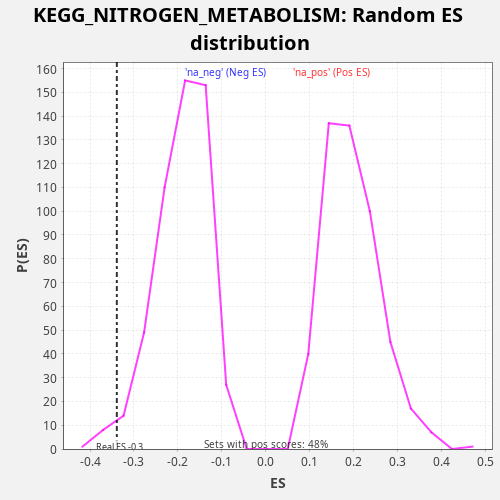

Profile of the Running ES Score & Positions of GeneSet Members on the Rank Ordered List
The same image in compressed SVG format
| Dataset | CCLE |
| Phenotype | NoPhenotypeAvailable |
| Upregulated in class | na_neg |
| GeneSet | KEGG_NITROGEN_METABOLISM |
| Enrichment Score (ES) | -0.3389362 |
| Normalized Enrichment Score (NES) | -1.78259 |
| Nominal p-value | 0.01934236 |
| FDR q-value | 0.060095176 |
| FWER p-Value | 0.788 |
| SYMBOL | RANK IN GENE LIST | RANK METRIC SCORE | RUNNING ES | CORE ENRICHMENT | |
|---|---|---|---|---|---|
| 1 | CTH | 2149 | 0.001 | -0.0374 | No |
| 2 | CA8 | 2408 | 0.001 | 0.0044 | No |
| 3 | GLS | 9423 | 0.000 | -0.2369 | No |
| 4 | CA7 | 9911 | 0.000 | -0.2046 | No |
| 5 | ASNS | 12233 | -0.000 | -0.2492 | No |
| 6 | GLS2 | 13545 | -0.000 | -0.2515 | No |
| 7 | CA13 | 13611 | -0.000 | -0.2016 | No |
| 8 | CA5B | 14483 | -0.000 | -0.1855 | No |
| 9 | GLUD1 | 16175 | -0.000 | -0.2037 | No |
| 10 | GLUD2 | 19403 | -0.002 | -0.2863 | Yes |
| 11 | CA3 | 19522 | -0.002 | -0.2386 | Yes |
| 12 | GLUL | 19552 | -0.002 | -0.1872 | Yes |
| 13 | CA14 | 20254 | -0.004 | -0.1639 | Yes |
| 14 | HAL | 21330 | -0.012 | -0.1564 | Yes |
| 15 | AMT | 21894 | -0.026 | -0.1273 | Yes |
| 16 | CA9 | 22111 | -0.037 | -0.0837 | Yes |
| 17 | CPS1 | 22937 | -0.262 | -0.0657 | Yes |
| 18 | CA12 | 23514 | -2.108 | -0.0372 | Yes |
| 19 | CA2 | 23577 | -2.752 | 0.0129 | Yes |

{kind=link}
{kind=link}